SAMAA: breaking the silence in healthcare
The problem
Hospitals in Tunisia rarely have medical sign-language interpreters. For deaf patients this means misdiagnosis, fear and exclusion from care.
The solution
- Three user profiles: patients who read and write, who speak but don't hear, and who rely entirely on sign language.
- Many ways to communicate: text input, speech-to-text, and sign-language video capture interpreted by AI.
- Visual medical keyboard: categorised, colour-coded buttons linked to Tunisian Sign Language videos, so doctors can communicate with no prior training.
- Accessible by design (WCAG): adjustable text size, high-contrast themes, emoji navigation, video-guided UI for non-readers.
- Beyond the consultation: digital medical ID card, volunteer interpreters on real-time video calls (WebRTC), and a community space for inclusive cultural and sports events.
- Trilingual: French, Arabic and Tunisian.
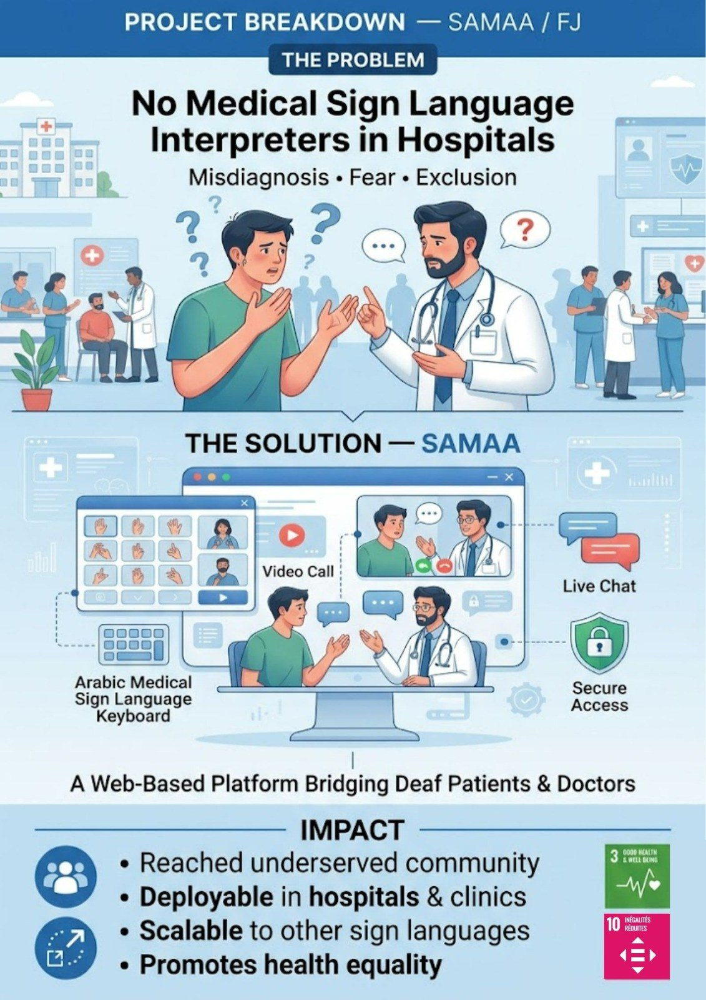
EcoSTEM Changemakers Lab
A hybrid humanitarian initiative that combined two challenge themes, the Green Campus / Green Community Challenge and the Women & Youth in STEM Impact Sprint, into one project.
Session 1 · Women & Youth Driving Sustainable Innovation
Online on Google Meet with IEEE WIE ISIMM. Speakers Manar Bouaouina and Mohamed Yasser Bedioui (IEEE Tunisia Section & IEEE ISIMM SB) covered humanitarian technologies, IEEE SIGHT, women in STEM, sustainable innovation and climate action.
Session 2 · Clean the Beach, Protect the Blue
At Qaraiya Beach with Notre Grand Bleu and Hedi Khefacha High School: an awareness stand on marine ecosystems, plastic pollution and sustainable habits, followed by a beach clean-up by several volunteer teams.
- A cleaner public shoreline and more awareness of marine pollution and recycling.
- High-school students and women introduced to STEM pathways and IEEE WIE.
- A multi-stakeholder partnership: IEEE SIGHT, WIE, ESPRIM & ISIMM SBs, Notre Grand Bleu and the UNESCO Chair EDE.
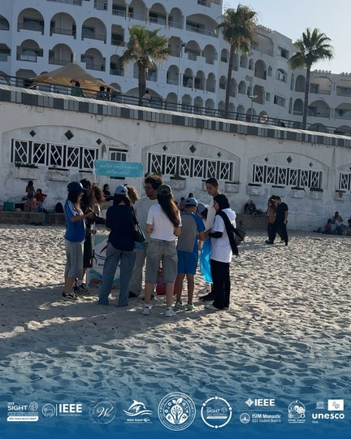
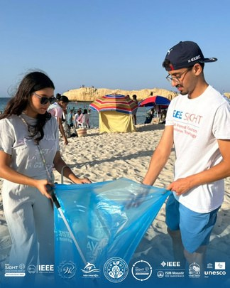
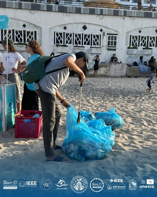
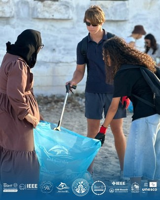
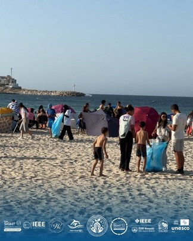
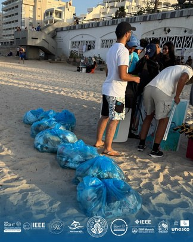
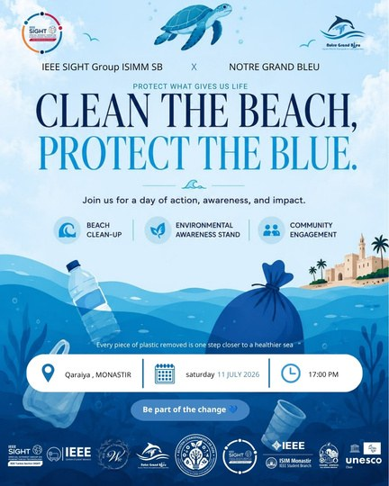
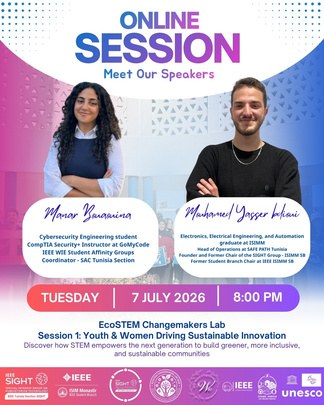
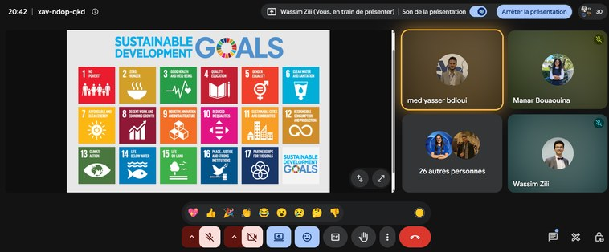
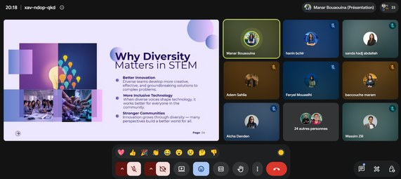
Digital Waves: digital empowerment for sea turtle protection
Environmental awareness → digital empowerment → community engagement. The activity followed a challenge-based awareness model: Discover → Learn → Collect → Create → Develop → Raise awareness.
What we did
- Discover: guided visit of Notre Grand Bleu at the Mediterranean Environmental Training Centre.
- Learn: Mediterranean sea turtle species, habitats, ecological role and threats (pollution, habitat degradation, bycatch), and why Posidonia oceanica matters.
- Collect: participants gathered and organised reliable information for public awareness.
- Create: the Sea Turtle Awareness Web Challenge, where teams combined research, UI/UX and web development to build awareness websites.
- Environmental awareness of sea turtles and the threats to their survival.
- Digital empowerment: an environmental issue turned into a practical web project.
- Community engagement: awareness content that can reach students and the wider public.
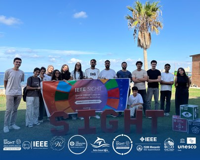
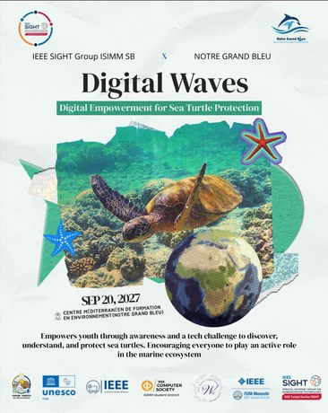
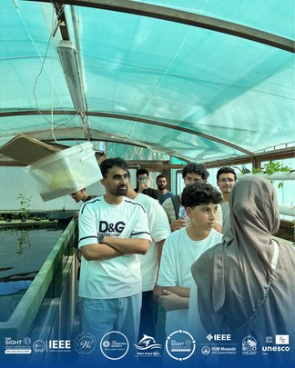
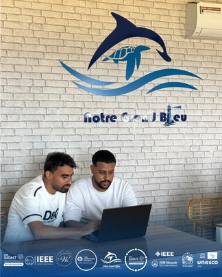
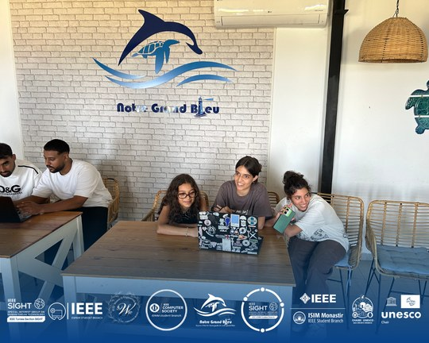
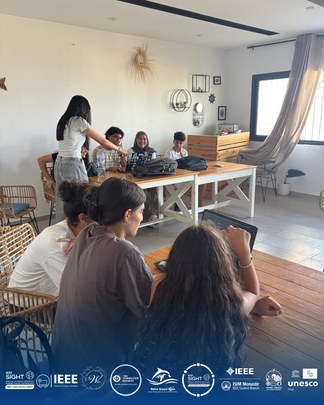
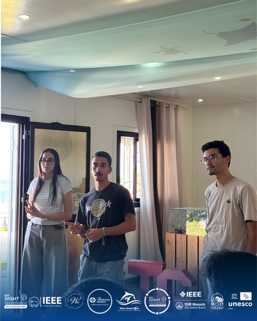
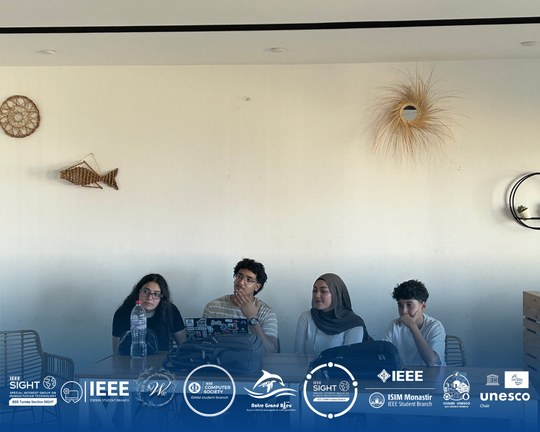
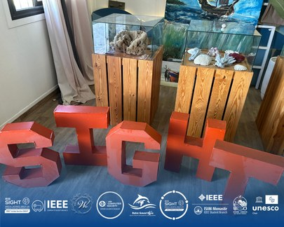